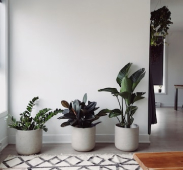
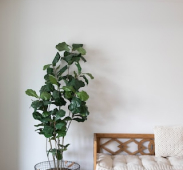
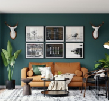
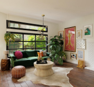

인테리어
내손으로 꾸미는 우리집 거실 식물 인테리어 만...
by. 식식 집사
미니멀한 거실! 식물 꾸미기도 미니멀 하게 만들어...
by. 미니멀스
다양한 식물로 알맞은 인테리어 하기!
by. 식물쪼아
인테리어
2022. 10. 20
조회수 3
우리집 식물 인테리어 구경하고 가세요~ 처음 해보는 거지만 많이 봐주세...
이번에 다른 분들 식물 인테리어 하시는거 보고 너무나도 뽐뿌가 와서 저도 우리 귀염둥이들을 가지고 인테리어에 도전 해 보았어요!! 다른 분들에 비해서 너무 못한것 같지만...
by. 박감자감자

인테리어
2022. 10. 20
조회수 4
오랜만에 다시 꾸미는 인테리어~
드디어 오랜만에 다시 인테리어로 돌아왔어요! 기분 전환겸 다시 인테리어를 했는데 너무 뿌듯하네요ㅎㅎ 인테리어 과정도 첨부 했으니 많이들 보고 가셨으면 좋겠어요! 그러면...
by. 다시돌아온 사과

인테리어
2022. 10. 20
조회수 6
[인테리어 팁 포함] 테이블 식물 인테리어
이번 기회에 테이블에 인테리어 할 일이 생겨서 고대하던 식물 인테리어를 하게 되었습니다ㅎㅎ 제가 여태까지 경험했던 인테리어 팁 까지 같이 공유해보는 시간도 가지게 되었...
by. 팁팁수박

인테리어
2022. 10. 20
조회수 9
내방을 화사하게 꾸며 보자! - 내가 기른 식물 편 (인테리어 사용 식물 정보 포..
방을 새롭게 꾸미면서 식물 인테리어도 다시 하게 되었어요(oﾟvﾟ)ノ 이번기회에 제가 기르고 있는 식물들도 같이 소개하면서 어떻게 인테리어 했는지도 같이 보여주고 싶었어..
by. 고구마구마
